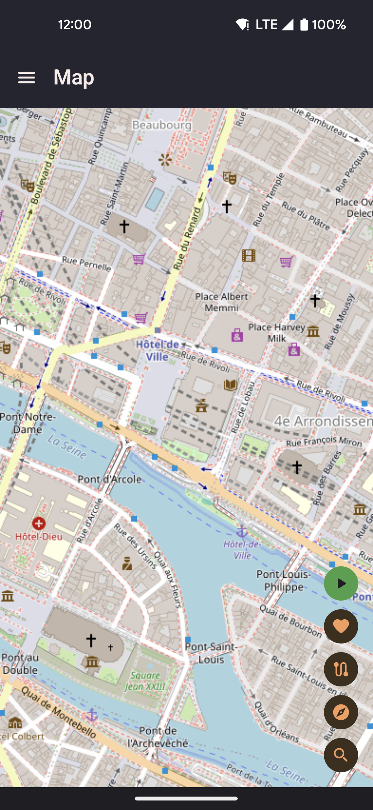
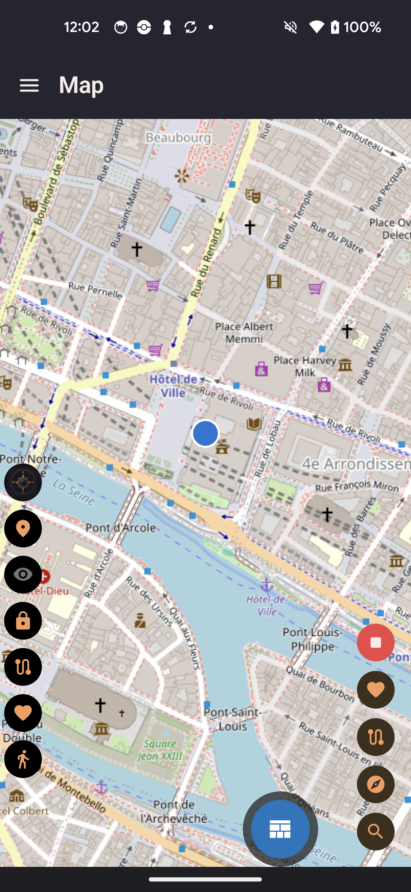

Floating joystick
A circular directional pad that floats over any app. Drag to move your spoofed location in real time while something else is in the foreground.

- Drag the thumb in any direction to move at the currently selected speed.
- Release to stop moving; your position holds at the last point.
- Drag the outer ring to reposition the joystick anywhere on screen.
Floating widget
A compact panel with quick-access controls. Tap the FAB to expand it, then use whichever controls you've configured in Settings — without opening the app.

- Choose any combination of controls in Settings: joystick toggle, speed cycle, routes, favorites, or map view.
- Collapse back to a single FAB when not needed.
- Drag the FAB to any edge of the screen to keep it out of the way.
Requirements
Both overlays require the Display over other apps permission
(SYSTEM_ALERT_WINDOW). The onboarding flow guides you through granting it.